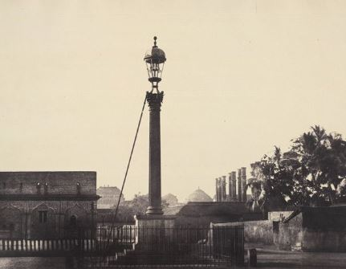
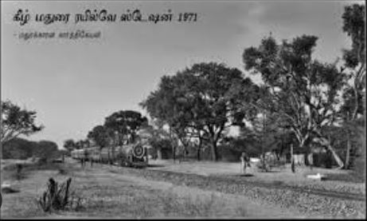
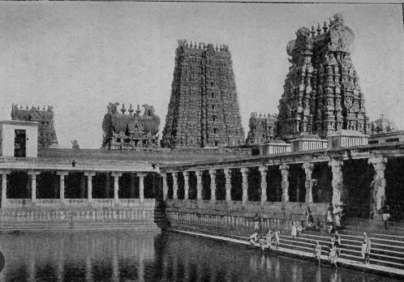
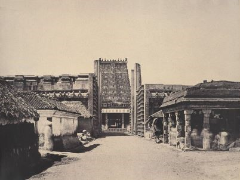

Madurai is a major city in the Indian state of Tamil Nadu. It is the cultural capital of Tamil Nadu and the administrative headquarters of Madurai District. As of the 2011 census, it was the third largest Urban agglomeration in Tamil Nadu after Chennai and Coimbatore and the 44th most populated city in India.It is located on the banks of River Vaigai.
Madurai is closely associated with the Tamil language. The third Tamil Sangam, a major congregation of Tamil scholars, is said to have been held in the city.
The recorded history of the city goes back to the 3rd century BCE, being mentioned by Megasthenes, the Greek ambassador to the Mauryan Empire, and Kautilya, a minister of the Mauryan emperor Chandragupta Maurya. Signs of human settlements and Roman trade links dating back to 300 BCE are evident from excavations by Archeological Survey of India in Manalur.Madurai is also mentioned in Kautilya's (370–283 BCE) Arthashastra.Sangam literature like Maturaikkāñci records the importance of Madurai as a capital city of the Pandyan dynasty.
Madurai is mentioned in the works of Roman historians Pliny the Younger (61 – c. 112 CE), Ptolemy (c. 90 – c. CE 168), those of the Greek geographer Strabo (64/63 BCE – c. 24 CE), and also in Periplus of the Erythraean Sea.Pandyan dynasty at its greatest extent historic metal coin used for transaction Coin of Jalaluddin Ahsan Khan, first ruler of the Sultanate of Madurai, 1335–1339 CE .After the Sangam age, most of present-day Tamil Nadu, including Madurai, came under the rule of the Kalabhra dynasty, which was ousted by the Pandyas around 590 CE. The Pandyas were ousted from Madurai by the Chola dynasty during the early 9th century. The city was fought over between the Cholas and the Pandyas during the 12th century, changing hands several times,until the early 13th century, when the second Pandyan empire was established with Madurai as its capital. After the death of Kulasekara Pandian (1268–1308 CE), Madurai came under the rule of the Delhi Sultanate.[36] The Madurai Sultanate then seceded from Delhi and functioned as an independent kingdom until its gradual annexation by the Vijayanagara Empire in 1378 CE. Madurai became independent from Vijayanagar in 1559 CE under the Nayaks. Nayak rule ended in 1736 CE and Madurai was repeatedly captured several times by Chanda Sahib (1740 – 1754 CE), Arcot Nawab and Muhammed Yusuf Khan (1725 – 1764 CE) in the middle of the 18th century.
Madurai is built around the Meenakshi Temple, which acted as the geographic and ritual centre of the ancient city of Madurai. The city is divided into a number of concentric quadrangular streets around the temple.
Viswanatha Nayak (1529–64CE), the first Madurai Nayak king, redesigned the city in accordance with the principles laid out by Shilpa Shastras (rules of architecture) related to urban planning.
These squares retain their traditional names of Aadi (situate within Meenakshi Temple), Chittirai, Avani-moola and Masi streets, corresponding to the Tamil month names and also to the festivals associated.The road surrounding the ancient Fort was called as Veli Street as Veli means outside in Tamil, hence termed to be outer road or something like today's Ring Road. The temple prakarams and streets accommodate an elaborate festival calendar in which dramatic processions circumambulate the shrines at varying distances from the centre. The temple chariots used in processions are progressively larger in size based on the size of the concentric streets. Ancient Tamil classics record the temple as the centre of the city and the surrounding streets appearing liken a lotus and its petals. The city's axes were aligned with the four-quarters of the compass, and the four gateways of the temple provided access to it.